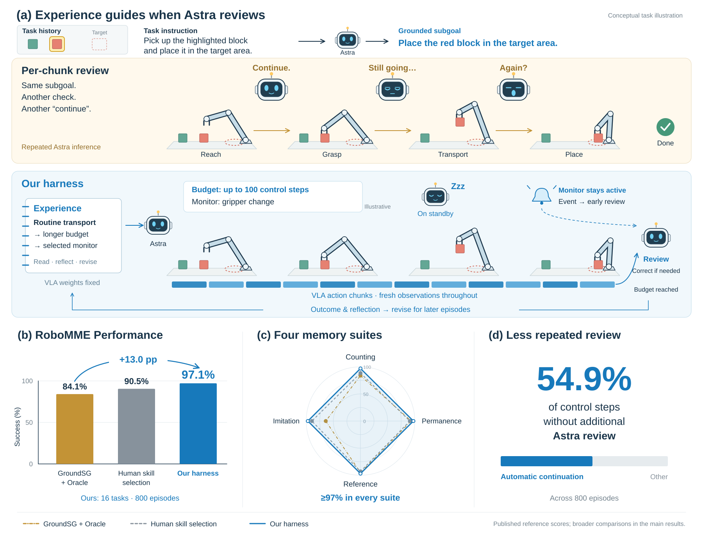
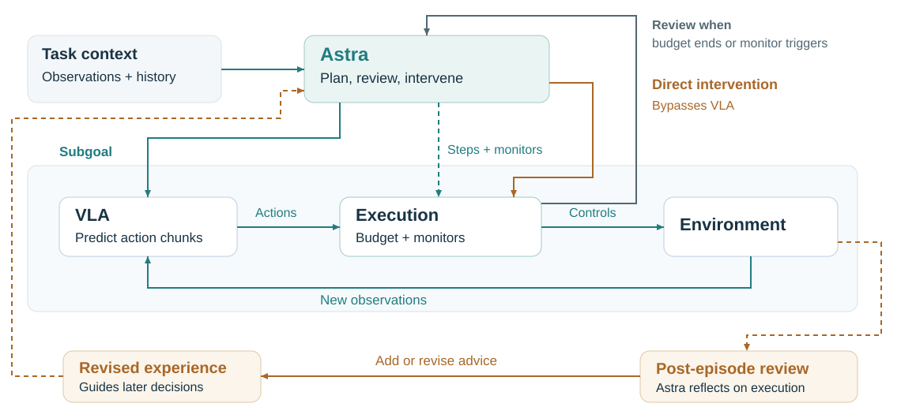

Technical report
Can Astra Guide a VLA to Solve RoboMME?
A Self-Evolving Harness for Memory-Dependent Manipulation
Xingping Chen1 · Zihao Mo1 · Yimin Chen2 · Zhanghui Kuang2 · Guanbin Li1,*
1 Sun Yat-sen University 2 TengenX * Corresponding author
Abstract
Robot manipulation often requires information from past observations to guide current actions. We present a self-evolving harness that combines GPT-6 Astra with the official RoboMME GroundSG vision-language-action model (VLA) for memory-dependent manipulation. Astra reasons over task history to determine subgoals and delegates their execution to the VLA. To balance execution autonomy with supervision, Astra assigns execution budgets that specify the maximum number of control steps before the next review, selects robot-state monitors that can trigger earlier review, and directly intervenes when corrective control is needed. Starting from subtask-duration priors, the harness accumulates and revises experience across episodes, progressively informing supervision decisions without updating the VLA weights. Across 800 evaluation episodes spanning all 16 RoboMME tasks, our harness achieves 97.1% success, with 54.9% of control steps executed without additional Astra review. These results demonstrate that high task success can coexist with reduced supervision frequency, highlighting the potential of experience-guided coordination between high-level reasoning and low-level robot control.


Figure 1. Experience-guided supervision of a VLA. (a) Astra interprets task history, delegates execution with a finite budget and selected monitors, and revises experience for later episodes. The scene and budget are illustrative; monitor events can prompt earlier review. (b,c) Success compared with the published RoboMME human skill-selection and GroundSG+Oracle references; Table 1 gives broader comparisons. (d) Automatic continuation accounts for 54.9% of executed control steps across 800 episodes.
1 Introduction
In robotic manipulation, deciding what to do next often requires information from past observations. A robot may need to remember which container hides a target, count earlier events, or reproduce a demonstrated action sequence. RoboMME evaluates these capabilities through 16 tasks grouped into counting, permanence, reference, and imitation [6]. Solving these tasks requires both reasoning over relevant history and executing actions consistent with it.
Recent RoboMME studies use GPT-6 Astra (hereafter Astra), a vision-language reasoning model, in two distinct roles. Direct control asks Astra to generate robot motion targets from visual history, placing both task reasoning and action generation in the model and requiring repeated inference during execution [12]. A three-tier system instead uses Astra to plan subgoals for a trained vision-language-action model (VLA), with a separate learned monitor tracking their completion [3]. This division reduces Astra’s involvement in routine motion but largely confines its role to planning. We explore how Astra can take a more active role in supervising VLA execution, particularly when to review progress and when to intervene.
Reviewing every short action sequence, or action chunk, incurs repeated inference cost even when the VLA is still executing the same subgoal. Longer intervals between reviews, however, can delay correction of a failed grasp or an incorrect motion. The appropriate level of supervision depends on the task stage, observed progress, and how the VLA has behaved in similar situations. Experience from earlier episodes can inform these decisions, provided it is revised when new outcomes reveal its limitations.
To address this trade-off, we present a self-evolving harness that uses accumulated execution experience to guide Astra’s supervision of the official RoboMME GroundSG VLA (Figure 1). Given task history and current observations, Astra selects a subgoal and assigns a finite execution budget. For longer execution intervals, it can activate auxiliary monitors, such as gripper-state or directional-motion checks, to trigger review before the budget expires. The VLA continues to act on updated observations throughout this interval. At each review, Astra decides whether to continue execution, revise the subgoal, or intervene directly. Initialized with subtask-duration priors derived from the VLA training data, the harness accumulates and revises experience across episodes to guide subsequent supervision decisions without changing the VLA weights.
We evaluate the harness on all 16 RoboMME tasks, with 50 episodes per task. It achieves 97.1% success across 800 episodes, reaches at least 90% on every task, and executes 54.9% of control steps without additional Astra review. Execution and experience traces show how prior outcomes lead to revised review intervals and more specific task interpretations. These results show that experience-guided supervision can achieve high task success while allowing the VLA to execute substantial portions of a task without repeated Astra review.
2 Related work
Foundation models for robot control.
Language and vision-language models have been used to connect task reasoning with robot execution through affordance-based skill selection, robot API programs, and spatial objectives for motion planning [9, 11, 14]. Vision-language-action models (VLAs) combine pretrained visual-language representations with robot demonstrations to learn action prediction [1, 13, 21]. RoboICL and GPT-Policy explore in-context robot control with general-purpose VLMs, using demonstrations and interaction feedback to adapt behavior without updating model weights at deployment [4, 15]. On RoboMME, direct Astra control generates Cartesian waypoints using sampled episode history [12]. Our harness instead relies on a trained VLA for routine motion, with Astra providing task reasoning, supervision, and direct intervention when needed.
Hierarchical execution and feedback.
Inner Monologue incorporates environmental feedback into language-based planning [10]. PonderPounce maintains episode context in a multimodal language model and asynchronously passes cognition tokens to a fast VLA, allowing high-level reasoning to inform low-level control [5]. -VLA uses execution memory and world-model-guided search to select subtasks for a low-level policy [2]. More closely related to our setting is the three-tier Astra system, which separates planning, monitoring, and execution. Astra generates subgoals, a fine-tuned Qwen3-VL-4B monitor detects their completion, and a fine-tuned executes them [3]. Our harness extends Astra’s role beyond subgoal planning to execution supervision and recovery. Astra assigns execution budgets, selects auxiliary monitors for earlier inspection, and directly intervenes when corrective control is needed.
Task memory and experience reuse.
RoboMME evaluates manipulation tasks that require reasoning over past observations [6]. Existing approaches maintain task history in different forms, including SAM2Act+’s visual memory bank, MEM’s short-horizon video and long-horizon text, SimpleMemVLA’s sampled video context, and MemER’s retrieval of relevant historical keyframes [7, 17, 18, 20]. These approaches provide historical context for decisions within an episode. Our harness likewise retrieves archived observations and maintains episode notes, but also accumulates experience that informs decisions across episodes.
Experience reuse beyond a single episode has been explored in Reflexion, which uses textual feedback to improve later attempts, and Voyager, which builds a library of reusable skills through interaction [16, 19]. ME-Brain-1.0 extends this direction to embodied intelligence by consolidating interaction trajectories into reusable experience and skills without retraining the underlying models [8]. Our harness focuses on using such experience to supervise an existing VLA. Astra maintains revisable recommendations for subgoal selection, execution budgets, monitor selection, and recovery, together with their applicable conditions and supporting evidence. Astra can revise these recommendations based on episode outcomes and reuse them in later decisions.
3 Harness
3.1 System and task context
The harness combines Astra’s task reasoning and supervision with VLA execution and direct intervention (Figure 2). The system uses the official RoboMME GroundSG checkpoint for low-level control, while Astra selects subgoals, supervises execution, and intervenes directly when needed.
Before each Astra review, the VLA predicts an action sequence from the current observations and subgoal. The harness uses forward kinematics to estimate the corresponding end-effector motion, making the predicted actions easier for Astra to interpret. Astra then receives the task instruction, current front and wrist RGB images, robot state, and a summary of the VLA’s predicted motion. It can also query archived observations and consult episode notes and relevant experience before making its next decision.


Figure 2. Astra assigns execution budgets and selects monitors while the VLA responds to updated observations. Direct interventions bypass the VLA, and post-episode review revises experience for subsequent episodes.
Astra can authorize a single action chunk, delegate multiple chunks before the next review, or directly issue end-effector targets in world coordinates and gripper commands. After a subgoal change or direct intervention, the VLA predicts a new action sequence using the latest observation and current subgoal before execution resumes.
History queries retrieve information no longer visible in the current observations, including reset demonstrations and intermediate frames. Astra initially samples frames from a requested interval, including its endpoints, and can narrow the interval or inspect individual frames when more detail is needed. Episode notes preserve task-relevant interpretations, unresolved hypotheses, and references to supporting frames. Global and task-specific experience remains available throughout the episode. All decisions rely on task instructions, RGB observations, and robot state available under standard RoboMME evaluation. The harness does not access privileged information such as ground-truth object states or oracle subgoals. Episode success is determined by official environment feedback.
3.2 Grounded subgoals
A grounded subgoal combines a RoboMME task template, semantic attributes, and target image points [6]. Astra identifies the relevant attributes from task history and the current scene. The harness then converts normalized image points into front-image pixel coordinates for the grounded instruction. For example, an InsertPeg grasp specifies which end of the peg to grasp and its image location:
pick up the peg by grasping the near end at <128, 64>
The coordinates are illustrative. The insertion subgoal also specifies the left or right side of the box. The VLA receives the grounded instruction alongside the task instruction, current images, and robot state, following the representation used in its RoboMME training annotations. Applicable experience can guide target selection or recovery, while Astra determines whether the recorded conditions apply to the current scene. Experience can thus influence subgoal selection without changing the task requirements or the VLA’s instruction vocabulary. Appendix C provides conversion and validation details.
3.3 Execution delegation and recovery
To avoid unnecessary reviews during routine execution, Astra assigns a finite execution budget based on current observations, task history, and relevant experience. Initial budget recommendations are derived from subtask durations in the VLA training demonstrations, using the lower quartile of each subtask’s duration distribution as a starting point. As experience accumulates, these recommendations are refined for specific task stages and execution difficulties.
For longer execution intervals, Astra can activate auxiliary monitors to detect events that may require attention. These include gripper-state changes, directional displacement beyond a specified threshold, and a lack of end-effector movement. When assigning a budget, Astra selects the relevant monitors, whose triggers prompt visual review before the budget expires. This allows longer periods of routine VLA execution without losing the ability to inspect potentially problematic events. Monitor thresholds and implementation details are provided in Appendix A.
The budget counts actual executed control steps rather than predicted actions. At chunk , let denote the remaining budget and the number of predicted actions available for execution. We use the official GroundSG evaluation setting of 16 executed steps per action chunk as the maximum chunk length. The number of actions released is
where is the number of actions actually executed. Execution may stop before all released actions are completed. As long as the budget remains and no monitor has triggered a review, the VLA predicts the next action chunk from updated observations. The VLA therefore continues to respond to changes in the scene without requiring Astra to review every chunk.
At each review during execution, Astra compares the latest observations with the intended subgoal and relevant history. It can extend execution, select a new subgoal, authorize one chunk at a time for closer supervision, or intervene directly. An incorrect target, for example, may require another history query and a revised subgoal, while a stalled contact motion may call for a local end-effector correction. After intervention, the VLA resumes from the resulting observation under Astra’s next decision. Budgeted execution and event-triggered reviews allow the VLA to handle routine motion while Astra focuses on decisions and recovery.
3.4 Cross-episode experience evolution
The experience store records what Astra learns about task interpretation and VLA execution across episodes. Each entry contains an observation or recommendation, its applicable conditions, and references to supporting frames. Experience can guide target identification, execution budgets, monitor selection, and recovery. Existing entries can be revised when new evidence changes their recommendations or applicable conditions, with earlier versions preserved. New findings become available to subsequent episodes.
After each episode, Astra reviews the execution in the same agent session. The review draws on retained interactions and tool responses, episode notes, active experience, and official outcome and termination feedback. Astra can also inspect archived front and wrist images, starting with sparse samples and examining individual intervals in greater detail when needed. Execution records preserve selected budgets, executed steps, and review triggers. These records help Astra identify problematic stages and reconsider its earlier supervision and recovery decisions.
Based on this review, Astra adds new entries for findings not yet covered by the store and revises existing ones when new evidence changes their recommendations or applicable conditions. For example, hovering before a scheduled review may motivate a shorter budget for that stage or the use of a stationary-motion monitor. Experience from a temporal query may also be refined to distinguish tasks that refer to events before or after a particular observation. These updates turn individual outcomes into more specific guidance for future decisions.
Experience updates undergo structural and scope checks before being stored. During later episodes, Astra can refer to relevant entries when selecting subgoals, setting execution budgets, or choosing recovery actions. The resulting decisions can be traced back to the experience that informed them (Section 5). The harness thus adapts through accumulated and revised experience while keeping the VLA weights fixed.
4 Experimental setup
Benchmark and adaptation.
We evaluate the official RoboMME test split, covering 16 tasks across Counting, Permanence, Reference, and Imitation, with 50 episodes per task and 800 episodes in total [6]. Episode seeds and difficulty follow the benchmark specification, and success is determined by official environment feedback. We use GPT-6 Astra as the supervisor and the official RoboMME GroundSG checkpoint, a grounded-subgoal policy, as the VLA. The VLA weights remain fixed throughout evaluation.
The experience store is initialized with subtask-duration recommendations derived from training demonstrations. For each task, experience can be updated after either successful or failed episodes during the first five evaluations. For the remaining 45 episodes, updates are restricted to failures. All 50 episodes count toward the reported success rate. Experience remains fixed during each episode, with accepted updates becoming available to subsequent episodes. Appendix A provides model settings, execution limits, and cross-task experience-sharing details.
Observation access.
The harness uses task instructions, front and wrist RGB images, and robot state available under standard RoboMME evaluation. Historical observations are retrieved from the same observation stream. Neither planning nor control accesses privileged environment information, such as hidden object states or oracle subgoals. Official success and termination feedback is used for outcome assessment and post-episode review.
Comparisons.
Table 1 compares learned policies, direct VLM control, and hierarchical systems using published overall success rates [3, 5, 6, 12, 17, 20]. Human skill selection and GroundSG+Oracle are reported separately as privileged references. For PonderPounce-9B, we use its reported standard-data leaderboard result. Other reference scores follow the cited benchmark and system reports. These systems differ in controller training, history access, intervention interfaces, and test-time adaptation.
We also compare our execution delegation with per-chunk Astra review on ten matched StopCube test seeds. Both conditions use the same models, history tools, recovery interfaces, and execution limits. For each seed, the two conditions share a saved version of the experience store, with updates disabled during comparison. Runs are conducted serially, alternating the order of the two conditions across seed pairs. This setup isolates the effect of review policy under matched experience conditions.
Measurements.
We report task success and the fraction of executed control steps attributed to four modes: subgoal entry, Astra intervention, automatic VLA continuation, and VLA continuation after review. The last mode covers the first VLA chunk released after Astra reviews progress on the current subgoal. Subsequent chunks executed within the same budget count as automatic continuation. Completion time includes model inference, history queries, action execution, and waiting. We report completion-time statistics for successful episodes, since failures may terminate early or run until the execution limit. Appendix D provides detailed accounting.
5 Results and analysis
5.1 Task performance
The harness succeeds in 777 of 800 episodes (97.1%; Table 1), exceeding the published direct-Astra and three-tier Astra results by 5.0 and 18.0 percentage points, respectively. Success reaches 97.0% on Counting, 97.5% on Permanence, and 97.0% on both Reference and Imitation. Every task achieves at least 90% success, with seven tasks reaching 50/50. The largest differences from direct Astra include MoveCube (100% versus 54%) and StopCube (96% versus 54%). Figure 3 shows the per-task results alongside published references.
Table 1. Overall success on RoboMME (%).
| Method | Overall |
|---|---|
| Learned policies | |
| 17.9 | |
| FrameSamp+Modul | 44.5 |
| SAM2Act+ | 21.4 |
| SimpleMemVLA | 88.3 |
| Direct VLM control | |
| Astra | 92.1 |
| Hierarchical systems | |
| MemER | 42.4 |
| GroundSG+QwenVL | 32.7 |
| GroundSG+Gemini | 11.6 |
| PonderPounce-9B | 60.8 |
| Three-tier Astra | 79.1 |
| Our harness | 97.1 |
| Privileged references | |
| Human | 90.5 |
| GroundSG+Oracle | 84.1 |

5.2 Supervision and execution efficiency
Automatic VLA continuation accounts for 54.93% of all executed control steps, allowing more than half of execution to proceed without additional Astra review (Table 2). Astra intervenes directly in 33.5% of episodes, but these interventions account for only 4.91% of control steps. Most motion is therefore handled by the learned controller, with Astra providing corrections when needed.
Table 2. Distribution of executed control steps across 800 episodes. Automatic continuation proceeds without an additional Astra review.
| Execution mode | Control steps (%) |
|---|---|
| Subgoal entry | 17.23 |
| Astra intervention | 4.91 |
| Automatic VLA continuation | 54.93 |
| VLA continuation after review | 22.93 |
Supervision patterns differ across tasks and execution stages. InsertPeg involves contact and alignment, often requiring close inspection and corrective action. RouteStick consists of short directional subtasks, so Astra tends to release one chunk at a time to avoid overshooting a subtask boundary. In VideoPlaceButton, Astra can delegate longer intervals once the target has been identified. These examples show how the harness adjusts review intervals to different execution demands.
Appendix E reports completion times across the full benchmark. To examine the effect of review frequency more directly, we conduct a matched comparison on StopCube.
Matched review-policy comparison.
Delegation reduces completion time on all nine StopCube seeds that succeed under both review policies (Table 3). Mean completion time falls from 513.2 to 285.6 s, a reduction of 44.3%. Across all ten seeds, both policies execute similar numbers of control steps, but delegation automatically continues 57.6% of execution requests and reduces total input tokens by 60.7%. Per-chunk review succeeds on 10/10 seeds, compared with 9/10 for delegation. These results show that delegation can substantially reduce inference overhead and completion time, with one additional failure in this matched comparison.
Table 3. StopCube review-policy comparison on ten matched seeds with experience updates disabled. Timing uses successful episodes; the paired row uses the nine seeds successful under both policies. Token counts include cached input and cover all ten episodes.
| Measurement | Per-chunk review | Delegation |
|---|---|---|
| Successes / episodes | 10/10 | 9/10 |
| Successful episodes: mean time (s) | 512.0 | 285.6 |
| Successful episodes: median / P90 (s) | 548.8 / 727.0 | 240.2 / 392.0 |
| Jointly successful seeds: mean time (s) | 513.2 | 285.6 |
| Automatic / all requests (%) | 0.0 | 57.6 |
| Mean control steps / episode | 202.1 | 201.0 |
| Total input tokens (millions) | 30.63 | 12.05 |
| Uncached input tokens (millions) | 2.22 | 1.19 |
5.3 Execution and experience analysis
Across the evaluation, Astra updates the experience store after 37 episodes, producing 43 entries, including seven revisions of earlier advice. Later execution decisions explicitly cite 38 of these entries across 468 episodes. The following cases trace how experience is revised and subsequently used to adjust supervision and task interpretation.
Revising execution advice.
In PickXtimes, Astra observes hovering during button pressing and adds a stationary-motion monitor to the recommended 90-step budget. In the next episode, execution again reaches the 90-step limit without triggering the monitor. The recorded motion never meets the stationary condition of a 2 mm threshold over a 32-step window; the smallest position diameter is 26.9 mm. Astra therefore revises the recommendation to an initial budget of 60 steps, with review intervals capped at 16 steps during contact or recovery.
In the following episode, Astra explicitly cites the revised advice and assigns a 60-step budget with the stationary-motion monitor enabled. The VLA executes four chunks of 16, 16, 16, and 12 steps before the budget expires. Astra then permits another chunk, and the task completes after 13 more steps. Figure 4 traces this progression. The revision brings visual review earlier without removing the stationary-motion monitor.

Episode 0 / frame 689
Hovering inspected after execution

Episode 1 / frame 284
90-step budget; monitor does not trigger

Episode 2 / frame 288
Review after the revised 60-step budget
Figure 4. Experience revision across three PickXtimes episodes. Hovering motivates adding a stationary-motion monitor, but continued motion prevents it from triggering in episode 1. Astra then shortens the budget from 90 to 60 steps and applies this advice in episode 2. Figure 6(a) follows episode 2 from review to completion.
Revising historical interpretation.
In VideoPlaceButton, a failed episode leads to advice for tracking visually similar rings through late demonstration swaps. However, the initial recommendation assumes a before-press query. In the next episode, the task asks for the first event after the press. Astra recognizes that the earlier rule does not apply and revises it to account for the temporal relation specified by the task.
A later episode asks for the last event before the press. Astra explicitly cites the revised rule in its notes and execution decision, inspects the relevant historical frames, and selects the topmost ring. The VLA completes the task in 54 steps under an 80-step budget. The revised experience retains the ring-tracking strategy while making target selection conditional on the requested temporal relation (Figure 5).


Figure 5. Experience revision across three VideoPlaceButton episodes. The initial rule tracks ring identity but assumes a before-press query. A first-after query prompts a conditional revision, later applied to a last-before query. Figure 6(b) shows the late swap within episode 3.
5.4 Failure analysis
We manually inspect all 23 failed episodes and classify their primary causes as historical interpretation (8), subgoal grounding (1), execution (9), or review and recovery (5).
Historical interpretation accounts for all five VideoPlaceOrder failures and also affects VideoPlaceButton and InsertPeg. The RouteStick grounding failure involves the task’s left–right convention. Execution failures include insufficient endpoint motion in two SwingXtimes episodes and insufficient container lift in one VideoUnmaskSwap episode. In ButtonUnmaskSwap, two episodes advance before the button action is complete, while the two StopCube failures involve early or missed button timing. Repeated alignment and contact recovery also leave some InsertPeg episodes unsuccessful. Figure 7 shows representative trajectories, with additional details in Appendix H.
6 Discussion and limitations
Despite high task success and less frequent Astra review, the harness has several limitations. On-demand history queries avoid loading the full observation history into Astra’s context, but sparse sampling can miss brief events or late target swaps, causing Astra to select the wrong subgoal. More targeted history retrieval could help recover evidence of such events while keeping the context manageable.
Experience revision allows Astra to correct advice after new outcomes, but an incorrect recommendation can still influence subsequent decisions before it is revised. The current store also has no explicit limit on accumulated experience. As it grows, redundant or conflicting recommendations may increase context usage and make it harder to select appropriate advice. Future work could retrieve only relevant entries and consolidate redundant advice without losing task-specific distinctions.
Reducing review frequency addresses only part of the execution overhead. Each Astra decision still requires remote model inference, introducing latency whenever execution pauses for supervisory review. Faster supervisory inference and fewer unnecessary reviews could improve responsiveness.
7 Conclusion
We presented a self-evolving harness in which Astra delegates execution to a VLA, supervises its progress, and revises experience across episodes. Across 800 episodes covering all 16 RoboMME tasks, the system achieves 97.1% success, with 54.9% of control steps executed without additional Astra review. By accumulating and revising experience, the harness adapts its subgoal selection, supervision, and recovery decisions while keeping the VLA weights fixed.
References
A Experimental settings
Table 4 summarizes the models and execution settings. We use the official GroundSG checkpoint trained on the RoboMME training split, with initial subtask-duration advice derived from the same training demonstrations. Experience updates follow the schedule in Section 4. Across the 800 evaluation episodes, the experience store was updated after 37 episodes, producing 43 additions or revisions, including seven revisions of earlier advice. These autonomous updates were task-specific, while global guidance was shared across tasks. The experience store remains fixed within each episode.
Table 4. Evaluation settings. Control limits count executed steps, including direct interventions.
| Setting | Value |
|---|---|
| Astra model and reasoning setting | GPT-6 Astra; high reasoning effort |
| VLA checkpoint and inference | Official RoboMME GroundSG (), training step 79,999; inference seed 42 with independent random state per connection |
| Environment control frequency | 20 Hz |
| Camera observations | Front and wrist RGB images |
| Sparse history query | Up to eight uniformly sampled frames, including endpoints |
| Delegation budget range | 30 to 200, in increments of 10 control steps |
| Executed actions per VLA prediction | Up to the first 16 predicted actions, limited by the remaining execution budget |
| Episode API limit | 80 calls; 8,192 output tokens per call; 300,000-token context limit |
| Cross-task experience | Shared global advice and separate task experience; fixed version per episode |
| Paired comparison sample | Ten StopCube seeds; 1,000 control steps per run; no experience updates |
| Compute and serving | Paired experiment: one NVIDIA A100 80GB for the VLA, dual Intel Xeon Platinum 8358P CPUs for simulation; Astra via remote API |
Robot-state monitors.
The harness provides both predictive and reactive monitor triggers. Predictive triggers request review before a proposed action is executed, while reactive triggers respond to changes measured during execution. Astra chooses which triggers to activate for each execution interval. A predictive gripper monitor can stop execution before a gripper-command switch. A measured gripper-width monitor detects a total finger-width change of at least 5 mm from the start of the interval, sustained over two samples in the same direction. The direction monitor can trigger on either proposed or measured displacement greater than 20 mm along a selected signed world-frame direction relative to the robot pose at the start of the interval. The stationary-motion monitor checks for a position diameter of at most 2 mm and an orientation diameter of at most over 32 executed control steps. Budget exhaustion also prompts review unless the episode has already terminated.
B Per-task performance and execution allocation
Table 5 reports success and automatic VLA continuation by task. Automatic continuation begins after the first chunk of an execution interval. The control-step fraction includes direct Astra interventions in its denominator. Each task contributes 50 episodes. Pooled fractions are calculated from all executed chunks or control steps, rather than averaging task percentages.
Table 5. Per-task results. SR: success rate; auto chunks: automatic continuation as a fraction of all VLA chunks; auto control steps: automatic continuation as a fraction of all executed control steps. All entries are percentages.
| Category | Task | SR (%) | Auto chunks (%) | Auto control steps (%) |
|---|---|---|---|---|
| Counting | BinFill | 96.0 | 63.61 | 60.41 |
| StopCube | 96.0 | 65.15 | 68.87 | |
| PickXtimes | 100.0 | 53.95 | 49.13 | |
| SwingXtimes | 96.0 | 46.87 | 45.20 | |
| Permanence | ButtonUnmask | 100.0 | 73.84 | 69.51 |
| VideoUnmask | 100.0 | 73.88 | 71.42 | |
| VideoUnmaskSwap | 98.0 | 69.11 | 65.87 | |
| ButtonUnmaskSwap | 92.0 | 50.26 | 41.35 | |
| Reference | PickHighlight | 100.0 | 71.43 | 69.17 |
| VideoRepick | 100.0 | 67.55 | 63.03 | |
| VideoPlaceButton | 98.0 | 76.26 | 75.36 | |
| VideoPlaceOrder | 90.0 | 63.44 | 65.93 | |
| Imitation | MoveCube | 100.0 | 53.30 | 48.64 |
| InsertPeg | 90.0 | 29.06 | 29.01 | |
| PatternLock | 100.0 | 35.62 | 34.06 | |
| RouteStick | 98.0 | 25.65 | 22.30 | |
| Overall / pooled | 97.1 | 58.11 | 54.93 | |
C Interface and experience details
Observation provenance.
We record which images were delivered to Astra in each successful request. These records distinguish evidence available to Astra during execution from frames examined retrospectively in the full recording, an important distinction when analyzing missed events or incorrect task interpretations.
Grounding.
For a front image of height and width , we convert a normalized point to pixel coordinates:
The converted coordinates fill the corresponding point slots in the grounded instruction. Validation checks that coordinates are finite and within bounds, that the expected number of points is provided, and that the attributes match the task template. Astra can inspect a visual overlay before selecting the subgoal. By default, a history query returns up to eight uniformly spaced frames, including the interval endpoints.
Control steps and duration priors.
Control steps are counted at the environment action interface, independently of simulator integration steps. At , control steps correspond nominally to seconds of simulated control; inference and API waiting contribute to wall-clock time separately. To estimate subtask durations, we deduplicate training samples by task, episode, and timestep, then group consecutive samples with the same subgoal label. We estimate segment lengths from timestep differences. For the duration distribution of subgoal , the initial budget recommendation is
Recommendations below 30 steps are treated as advice for close review rather than as delegation budgets. Sampled annotations may miss short segments or include trailing frames in terminal segments, so these estimates are initial guidance rather than exact subtask boundaries.
Experience validation and applicability.
Experience submissions are checked for required fields, applicable
task scope and conditions, supporting frame indices, and identifiers of
superseded entries. Scheduling recommendations must also use compatible
subgoal templates and valid monitor parameters. During retrieval, the
harness resolves superseded recommendations. The optional field
max_trust_steps records a recommended review interval,
while the configured execution maximum remains a hard limit.
D Measurement definitions
Success rate is the number of officially successful episodes divided by the number evaluated. Since each task has 50 episodes, overall success also equals the mean of the per-task success rates. Completion-time statistics include only the 777 successful episodes, while token totals cover all 800. Elapsed time includes failed API attempts. Token usage is recorded when returned by the API; cached input is a subset of total input, and usage missing from failed requests remains unknown. Execution and post-episode review tokens are reported separately. API latency alone does not measure the full duration of post-episode review.
The first VLA chunk of a new subgoal is counted as subgoal entry. The first VLA chunk released after Astra reviews an existing subgoal is counted as VLA continuation after review. Later chunks executed within the same budget are automatic VLA continuation. The automatic-chunk fraction divides automatic chunks by all executed VLA chunks. The automatic-control fraction divides steps in automatic chunks by all executed control steps, including direct interventions. Both fractions use pooled counts, not averages of episode-level percentages.
Table 6. Execution allocation across all 800 episodes. Each row counts executed robot-control requests (VLA chunks or direct intervention segments); direct interventions can have different lengths from VLA chunks. Percentages use pooled counts.
| Execution mode | Requests | Share (%) | Control steps | Share (%) |
|---|---|---|---|---|
| Subgoal entry | 2,829 | 15.88 | 44,709 | 17.23 |
| Astra intervention | 587 | 3.29 | 12,752 | 4.91 |
| Automatic VLA continuation | 10,014 | 56.20 | 142,516 | 54.93 |
| VLA continuation after review | 4,390 | 24.64 | 59,495 | 22.93 |
| Total | 17,820 | 100.00 | 259,472 | 100.00 |
E Successful-episode execution time
Completion time runs from environment readiness to the end of robot execution, excluding startup and post-episode review. It includes model inference, history queries, action execution, and waiting. The pooled statistics use all 777 successful episodes rather than averages of task means; P90 uses linear interpolation between ordered observations.
Mean completion time is 513.7 seconds, with a median of 390.5 seconds and a 90th percentile of 1,102.0 seconds. Task means range from 141.2 seconds for VideoUnmask to 991.8 seconds for ButtonUnmaskSwap. These full-benchmark timing results are descriptive, not controlled efficiency comparisons with published systems. API load and network conditions also affect elapsed time. The matched StopCube experiment instead compares review policies under controlled conditions.
Table 7. Completion times for successful episodes. All times are seconds.
| Task | Successful episodes | Mean | Median | P90 |
|---|---|---|---|---|
| BinFill | 48 | 802.1 | 800.1 | 1378.9 |
| StopCube | 48 | 416.6 | 385.1 | 615.0 |
| PickXtimes | 50 | 712.2 | 602.6 | 1315.3 |
| SwingXtimes | 48 | 887.3 | 913.3 | 1340.5 |
| ButtonUnmask | 50 | 359.0 | 267.4 | 726.2 |
| VideoUnmask | 50 | 141.2 | 111.5 | 237.1 |
| VideoUnmaskSwap | 49 | 383.5 | 288.8 | 690.5 |
| ButtonUnmaskSwap | 46 | 991.8 | 916.6 | 1319.7 |
| PickHighlight | 50 | 385.1 | 352.6 | 610.3 |
| VideoRepick | 50 | 782.9 | 645.0 | 1239.5 |
| VideoPlaceButton | 49 | 306.7 | 281.4 | 413.3 |
| VideoPlaceOrder | 45 | 254.1 | 244.3 | 341.0 |
| MoveCube | 50 | 296.2 | 160.8 | 690.7 |
| InsertPeg | 45 | 760.1 | 719.6 | 1150.8 |
| PatternLock | 50 | 249.5 | 224.4 | 461.0 |
| RouteStick | 49 | 544.1 | 494.0 | 880.1 |
| Overall / pooled | 777 | 513.7 | 390.5 | 1,102.0 |
F Monitor selection and resource use
Monitor selection is measured across 3,541 execution intervals. Multiple monitors can be active in the same interval, so their selection shares do not sum to 100%. No optional monitor is selected in 1,840 intervals (51.96%), although budget limits and mandatory termination checks still apply. Trigger frequency records intervals that end with a monitor condition; it is not a measure of error-detection accuracy.
Table 8. Monitor selection and subsequent triggering. The 28 direction triggers all concern proposed motion; none comes from measured directional displacement.
| Monitor | Selected | Share (%) | Triggered / selected (%) |
|---|---|---|---|
| Before gripper-command switch | 1,062 | 29.99 | 28.91 |
| Measured gripper-width change | 354 | 10.00 | 70.34 |
| Selected-direction displacement | 244 | 6.89 | 11.48 |
| Stationary motion | 120 | 3.39 | 0.00 |
Monitor choices vary with task stage. On StopCube, none of the 51 button-preparation intervals uses an optional monitor, while 56 of 85 stationary-waiting intervals use a direction monitor. On SwingXtimes, the pre-command gripper monitor is selected in 186 of 193 target-movement intervals (96.37%), compared with 22 of 93 grasping intervals (23.66%). On PickXtimes, the stationary-motion monitor is selected in 49 of 50 button-stop intervals but never triggers. Across the full evaluation, all 28 direction-monitor triggers come from predicted motion rather than measured displacement.
Table 9. Mean recorded token usage per evaluated episode, over all 800 episodes. Cached input is a subset of input.
| Tokens | Execution | Post-episode review |
|---|---|---|
| Input | 1,790,701.2 | 318,456.8 |
| Cached input | 1,633,224.3 | 308,963.6 |
| Uncached input | 157,476.9 | 9,493.2 |
| Output | 2,724.9 | 674.2 |
Usage records are available for all 19,061 successful API responses. The 112 failed attempts have unknown usage, giving 99.4% coverage by request count. Per-episode means divide recorded usage by 800 episodes and may underestimate total token consumption. These values are not billing estimates.
G Within-episode case sequences
Figure 6 adds within-episode evidence to the experience-revision cases in Figures 4 and 5, with two frames from the same episode in each pair.
(a) PickXtimes / episode 2
Frame 288
Budget exhausted; review

steps review
Another 13 control steps success
(b) VideoPlaceButton / episode 3

Late changes in ring positions
Both frames inspected after failure
Figure 6. Within-episode evidence for two experience-revision cases. (a) After the revised 60-step budget expires, Astra reviews the scene and permits another chunk; the task succeeds after 13 additional steps. (b) Frames before and after the late ring swap, both inspected during post-episode review.
H Failure annotation and reference-frame clarification
We manually assign one primary cause to each of the 23 failed episodes: historical interpretation (8), subgoal grounding (1), execution (9), or review and recovery (5). The execution group includes two SwingXtimes episodes in which the motion falls short of the target and one VideoUnmaskSwap episode with insufficient container lift.
In the first RouteStick episode, Astra misinterprets the task’s left–right convention and selects an incorrect directional subgoal. RoboMME’s task instructions do not explicitly specify the reference frame for left and right. We therefore added a clarification that task directions refer to the initial wrist view or initial robot orientation, rather than the changing wrist orientation or the front-image axes. We placed this note in the global experience context, although it could equally have been included in the system prompt. It clarifies the task interface rather than providing privileged scene information, and it is excluded from the 43 recorded experience additions and revisions. The published direct-Astra study similarly specifies a left–right convention in its shared prompt and reports that an earlier run without it failed all 50 SwingXtimes episodes [12]. Grounding points still use pixel coordinates from their respective camera views.
(a) VideoPlaceOrder / episode 11


(b) ButtonUnmaskSwap / episode 17


(c) InsertPeg / episode 0


Figure 7. Representative failed episodes, shown in temporal order. (a) VideoPlaceOrder loses track of the target after a late ring swap; frame 740 was inspected retrospectively. (b) ButtonUnmaskSwap moves to container manipulation before completing the button action, then retries. (c) InsertPeg remains incomplete despite repeated alignment and recovery attempts.
I Review-policy comparison
We compare review policies on ten official StopCube test seeds using the same harness configuration. For each matched seed, both policies receive identical experience input. Experience updates are disabled throughout the comparison, and the order of the two policies alternates across pairs.
Delegation is faster on all nine seeds successful under both policies, saving 227.6 seconds on average. In the first pair, VLA inference takes 35.5 seconds with per-chunk review but only 2.3 seconds with delegation. To check whether this difference drives the result, we exclude that pair. Across the remaining eight joint successes, mean completion times are 491.9 and 280.6 seconds, a 43.0% reduction. Across all ten seeds, per-chunk review executes 2,021 control steps versus 2,010 with delegation. Total input tokens decrease from 30.63 to 12.05 million, uncached input from 2.22 to 1.19 million, and output from 32,222 to 21,333 tokens.